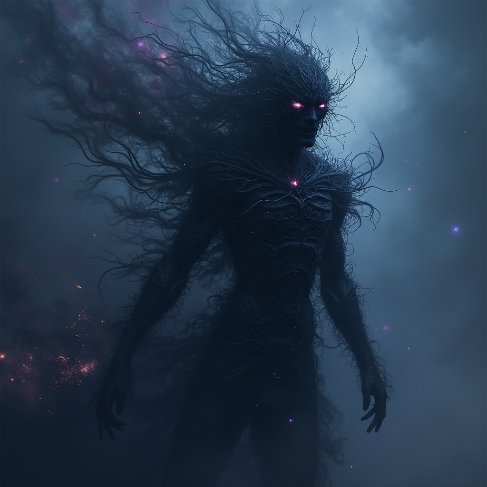
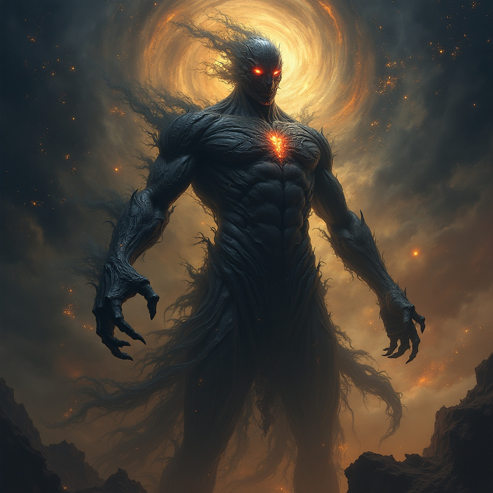

The Vekya are the first and most ancient powers — primordial deities born from the corpse-fire of the cosmos
when all
things were still raw, bleeding, and half-formed. They are not gods in the manner of those who hunger for
worship or
cling to mortal praise. No — the Vekya are forces, vast and unknowable, carved from the marrow of creation’s
agony. They
are will made flesh, hunger made law, eternity made conscious.

Uzume
Uzume was one of the Three Primals — ancient beings whose wills shaped the foundations of existence. She was
the
Lifebringer, the Great Mother, the first spark in the void. From her breath came the Annarr, radiant children of
divine order and spirit, and from her blood were born the Annarr-kin, faithful companions to the Annarr. In her,
the
essence of creation found its genesis; every beating heart, every blooming world traces its origin back to her
light.
But her gift of life made her a threat. In time, Uze was betrayed by those she called kin — her brothers, Cronos
and
Kaos. Cronos, hungry for sole control of time and permanence; Kaos, yearning for unmaking and the return to
void.
Together, they struck her down, not with weapons, but with deception, division, and silence. Her fall marked the
first great wound upon the universe — and from that wound spilled conflict, decay, and the long twilight of
harmony.
Yet even in her absence, her touch lingers — in the growing things, in the stars that yet burn, in the souls
who dare to create rather than destroy. For we are all made of stardust.

Kaos
Born from the depths of the abyss, Kaos is the living embodiment of entropy — the shadow to Uzume’s radiant
light.
Where she danced to inspire joy and harmony, he moves in silence, a hidden force pulling the threads of fate
into
knots. His presence is not felt, but known in the unraveling of order, in the collapse of certainty. The gambler
who
tempts fate, the warrior who trusts in luck, the lover who hopes for forever — all fall to the whisper of Kaos.
His
breath is the chill of inevitable ruin, a curse wrapped in chance. In his wake, patterns shatter, stars blink
out, and
the universe remembers its primal truth: that from chaos it was born, and to chaos it shall return.

Cronos
"Time is not your enemy. It is your debt. And I am its collector."
— Cronos
Before stars blinked or worlds spun, there was only the void—an abyss where silence rotted. From that emptiness
rose the first gods: Uzume, goddess of creation; Kaos, lord of chaos; and Cronos, the cold keeper of cosmic time.
Cronos did not shape or destroy—he counted. Time flowed through him, impartial and absolute. But when Uzume crafted
the Annarr—divine beings born of love—Cronos grew bitter. She had purpose. He had only silence.
Forbidden from harming her, Cronos conspired with Kaos and the great dragon Fafnirog, promising the beast divinity in
exchange for betrayal. At the Celestial Forge, Fafnirog struck Uzume down. Cronos watched as her light scattered
across the cosmos.
But her dying breath cursed him. Uzume’s final gift was life itself, seeded in mortals—beyond the reach of
Cronos or Kaos. The orderly flow of time became fractured, colored by chaos, emotion, and mortality.
Cronos did not weep. He marked the moment.
Now he drifts unseen at the edge of existence—never worshipped, only feared. Time continues, and through it, so
does he. Not as a god of mercy or wrath, but as a quiet inevitability.
He does not answer prayers. He measures them.